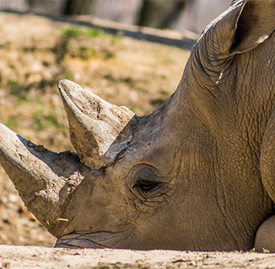
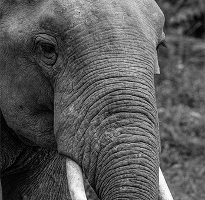

Species at Risk
Monkeys
More than half the world’s primates including apes, lemurs, and monkeys are facing extinction. The causes of these actions are mainly habitat loss especially the clearing of tropical forests, and how people have hunted primates for food and illegal wildlife trade.
Rihno
There are at least three species of rhinos that are critically endangered. The three are black, Javan, and Sumatran, only a small population of Javan rhinos are found in one national park on the Northern tip of Indonesian Island of Java. In other areas the Java Rhino was declared extinct in Vietnam in 2011.
Elephant
Elephants have been known to be endangered due to deforestation and habitat loss. In 2012 studies indicated that the Sumatran Elephant was changed from Endangered to Critically Endangered because half of its population has been lost in one generation. This was mostly due to habitat loss and as a result in people hunting elephants for sport.